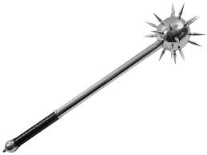

Our Selection
- Longsword ($150.99) - The classic symbol of chivalry and knighthood, a sharp steel blade roughly 3 ft. in length
- Dagger ($60.49) - A short double-edged blade forged in steel
- Zweihander ($314.99) - A monstrosity of a blade, nearly 6 ft. in length, a hallmark of the famed German Landsknechte
- Battle Axe ($175.99) - A double-bladed axe designed for combat, popular with the Vikings
- Spear ($99.99) - A weapon with a long shaft and a pointed steel tip, useful for bracing against cavalry charges
- Ranseur ($145.99) - Crescent-shaped polearm with three prongs similar to a trident
- Guisarme ($145.99) - Developed by peasants combining hand tools with long poles
- Halberd ($145.99) - Two-handed pole weapon that remsembles a cross between a spear and an axe
- Mace ($110.49) - A heavy club with a steel head and spikes 
- Flail ($160.99) - A threshing tool consisting of a wooden shaft and a cylindrical steel head, connected together by a chain
- Longbow ($175.99) - A large bow drawn by hand and shooting long feathered arrows, predominantly used by the English armies from the 14th century and onwards until the introduction of firearms
- Crossbow ($100.00) - A medieval bow of a kind that is fixed across a wooden support and has a groove for the bolt and a mechanism for drawing and releasing the string
3472 Nottingham Street
Portland, Oregon 97201
Hours of Operation: Monday-Friday 9 AM - 5 PM
Phone: 503-514-6666
Fax: 503-514-5555
Portland, Oregon 97201
Hours of Operation: Monday-Friday 9 AM - 5 PM
Phone: 503-514-6666
Fax: 503-514-5555